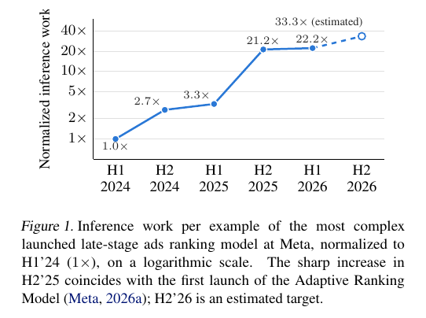
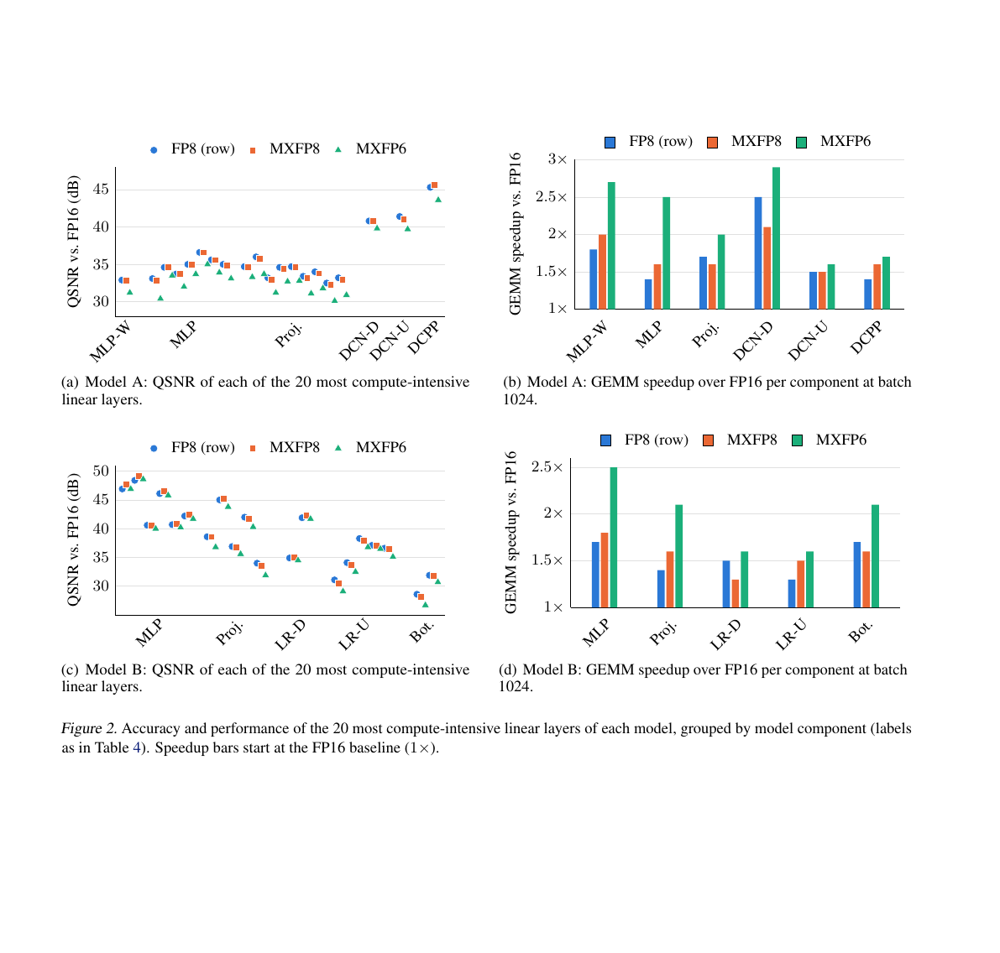

Contents · 6 sections
1Compute grew in the dense layers, but quantization is barely allowed to lose quality2Why microscaling can make 6-bit almost as accurate as 8-bit3Walkthrough: how Model A decides which layers can go to 6-bit4Why the kernel speedup does not show up as a 4× end-to-end gain5What this means for people who run recommendation inference6LimitsSHARE
The most complex ads ranker now does about 22× the work per example. How MXFP8 and MXFP6 recover throughputYou open a feed, and behind that request a batch of ads has to be scored. The scores must come back within a second, and the prediction quality is barely allowed to drift from the live model.
In Meta's ads ranking stack, inference work per example of the most complex launched late-stage ranker rose to about 22.2× its first-half 2024 level by the first half of 2026. The second-half 2026 target is 33.3×. Compute is growing, but the power wall is still there, so new GPUs put their peak throughput in lower precision. On AMD's MI350X, dropping from 16 bits to 8 bits can double peak throughput; dropping again to 6 bits can double it once more.
This paper, from Meta and AMD, tries two microscaling formats on two production ads ranking models on MI350X: MXFP8 (8-bit microscaling floating point) and MXFP6 (6-bit microscaling floating point). The existing approach switches only a few tolerant linear layers to FP8, with tensor-wise or row-wise scaling, and leaves the rest in FP16. The authors write kernels that multiply directly on these low-bit elements, fuse activation quantization into producer kernels, and then select layers for MXFP6 under a 0.01% Normalized Entropy (NE) launch bar. After the swap, end-to-end throughput rises 1.5%–5.3% for Model A and 7.6%–14.3% for Model B over each model's production FP8 configuration. MXFP8 has nearly the same accuracy as row-wise FP8, so the faster kernel can be chosen for each GEMM shape.
These results come from two production models on AMD MI350X. They are not a general claim about every recommendation model or every GPU.
Compute grew in the dense layers, but quantization is barely allowed to lose quality
Industrial recommendation and ranking models still follow a DLRM-style structure. Categorical features, such as user and ad IDs, are looked up in large embedding tables; continuous features go through an MLP into the same space. An interaction architecture then models relations among those vectors, and another MLP produces scores for several tasks. Most parameters live in the embedding tables, but lookups are memory-bandwidth bound and add few FLOPs. The heavy compute is the matrix multiplies, or GEMMs, in the interaction stack and the MLPs. Those GEMMs are what this paper quantizes.
Quantization studies on large language models often treat a 1%–3% accuracy drop as acceptable. Ads ranking does not use that bar. The launch threshold is a Normalized Entropy (NE) gap of no more than 0.01% versus the production baseline. A 0.01% gap is close to no loss at all. Because candidate methods could not clear that bar, sub-16-bit quantization in production covered only a few linear layers, and a large share of GEMMs still ran in FP16.
The added compute landed in those same dense layers. Figure 1 plots inference work per example of the most complex late-stage ranker, normalized to first-half 2024 as 1×. Before adaptive ranking launched, a larger model had to serve all traffic, so work grew only to about 3.3× by the first half of 2025. In the second half of 2025, Meta's Adaptive Ranking Model routed requests to models of different complexity based on the person's context, and computed user-side signals once per request instead of once per ad. The frontier jumped to about 21.2×, then 22.2× in the first half of 2026. GEMMs therefore take a larger share of inference time, and the payoff from lower precision is larger too.

Hardware is also betting on lower precision. Table 1 of the paper reports that on NVIDIA GB300, FP8, MXFP8, and MXFP6 all have 2× the peak throughput of FP16; on AMD MI350X, MXFP8 is 2× and MXFP6 is 4×. That means if 6-bit can actually be used, this GPU has a larger theoretical headroom than 8-bit. The question is whether 6-bit can clear the 0.01% NE bar.
Why microscaling can make 6-bit almost as accurate as 8-bit
MXFP8 and MXFP6 come from the Open Compute Project (OCP) microscaling (MX) standard. Along the GEMM reduction dimension, every 32 consecutive elements share one 8-bit, power-of-two scale, written E8M0 (an 8-bit exponent-only scale). The scale has no sign bit, so applying it just shifts exponents and maps that small block into the representable range. A single large value only disturbs its own block of 32, and does not drag down the effective precision of the whole tensor. That differs from tensor-wise FP8, where one FP32 scale is shared by the entire tensor and one outlier hurts every value. Row-wise FP8 is a middle ground: one scale per activation row, and one per weight output channel.
Once the block's dynamic range has been aligned this way, extra exponent bits matter less than mantissa bits. MXFP8 comes in two 8-bit floats: E5M2, with 5 exponent bits and 2 mantissa bits, and E4M3, with 4 exponent bits and 3 mantissa bits. At a block size of 32, the extra exponent range of E5M2 is largely unused, while the extra mantissa bit halves the quantization bin width. Under standard quantization-noise theory, the quantization signal-to-noise ratio (QSNR) rises by about 6 dB. QSNR is ten times the log of the reference output energy divided by the energy of the difference from the low-precision output; the unit is decibels, and higher means less quantization noise. That is why this paper uses only E4M3 for MXFP8.
MXFP6 uses E2M3: 2 exponent bits and 3 mantissa bits, the same mantissa width as E4M3. Because the E8M0 scale is itself a power of two, it does not change how the mantissa is rounded. In the normal range, every E2M3 element therefore quantizes to the same value as MXFP8's E4M3. Only values about 4× to 8× smaller than the block maximum, which fall into the subnormal range, lose precision relative to 8-bit. The gap between 6-bit and 8-bit is concentrated in those smaller numbers. Hoot says
The body walk-through already covers how Model A decides which layers move to 6-bit, using per-layer QSNR and the 0.01% NE bar. This walks the format itself: why values in the normal range of E2M3 match 8-bit, and why only smaller values lose precision. Illustratively, the scaled block maximum is taken to sit near the E2M3 cap 7.5, so the paper's “about 4× to 8× smaller” cutoff can be placed on a number line. 7.9, 3.95, 4.0 and the two errors are the Appendix A.2 example of OAS versus OCP, about clamping error on the maximum; the claim that OAS widens the range for smaller values is versus standard no-saturation scaling, a different baseline.
32 values share one E8M0 scale → only exponents shift → normal-range E2M3 matches E4M3 → values about 4–8× smaller go subnormal → OAS cuts clamp error vs OCP, and vs standard scaling slightly saturates the max to widen range for smaller values
- 32 consecutive elements → one E8M0 scaleAlong the GEMM reduction dimension, every 32 consecutive elements share one 8-bit, power-of-two scale. The scale has no sign bit, so applying it only shifts exponents, and a single large value only disturbs its own block.block size = 32
- E8M0 scale → mantissa rounding unchangedE2M3 and E4M3 both have 3 mantissa bits. Because the E8M0 scale is a power of two, it only shifts exponents and does not change mantissa rounding, so in the normal range of E2M3 every element quantizes to the same value as MXFP8's E4M3.mantissa bits: E2M3 = E4M3 = 3
- block maximum → subnormal boundaryE2M3 has F_max=7.5 and a minimum positive subnormal of 0.125, so its dynamic range is only 60, much narrower than E4M3. The paper says only values about 4× to 8× smaller than the block maximum, which fall into the subnormal range, lose precision relative to 8-bit; if the scaled block maximum sits near 7.5 (illustrative), that cutoff lands around 0.94 to 1.88.7.5 ÷ 8 = 0.9375, 7.5 ÷ 4 = 1.875
- Overflow-Aware Scaling (OAS) → the block maximum and the smaller valuesIn the appendix, if MXFP6-OCP maps the block maximum to 7.9, it is clamped to 7.5 (relative error 5.06%); OAS maps it to 3.95, which rounds to 4.0 (error 1.27%), so versus OCP it reduces clamping error on the maximum. Versus the standard computation, which maps into (3.75, 7.5] and avoids saturation, OAS accepts slight saturation of the maximum and doubles the representable range for the smaller values — the two gains have different baselines.|7.9−7.5|/7.9 = 5.06%; |3.95−4.0|/3.95 = 1.27%
- lost exponent range → QSNR gapUnder the paper's uniform quantization-noise assumption, losing one mantissa bit would double the quantization bin width and drop QSNR by about 6.02 dB. What is given up here is exponent range, so on Model A the median per-call-site MXFP6–MXFP8 QSNR gap is 1.0 dB across comparable layers, and 1.8 dB on the 20 most compute-intensive layers.6.02 dB (lose 1 mantissa bit) vs 1.0 dB / 1.8 dB (median per-call-site gaps)
So the gap between 6-bit and 8-bit sits mainly in the smaller values of the block, not in every value losing one bit of precision.

Source
Paper §4.1: E2M3 and E4M3 share 3 mantissa bits; the E8M0 scale does not change mantissa rounding, so normal-range values match; only values about 4× to 8× smaller than the block maximum, which fall into the subnormal range, lose precision. Table 2: E2M3 has F_max=7.5, F_min=2^{-3}=0.125, dynamic range 60. Appendix A.2: OAS maps the block maximum to (3.875, 7.75], the standard computation to (3.75, 7.5], and MXFP6-OCP to (4, 8]. If α_max maps to 7.9 under MXFP6-OCP, it is clamped to 7.5 (error 5.06%); OAS maps it to 3.95, which rounds to 4.0 (error 1.27%). Versus the standard computation, OAS accepts slight saturation of the maximum and doubles the representable range for smaller values; versus OCP, it reduces clamping error on the maximum. Appendix A.1: under a uniform quantization-noise assumption, adding one mantissa bit halves the bin width and raises QSNR by about 6.02 dB; losing one bit doubles the bin width and drops QSNR by about 6.02 dB. The body's Model A median gaps of 1.0 dB and 1.8 dB on the top 20 layers are reused here as contrast. 0.9375 and 1.875 are 7.5÷8 and 7.5÷4, placing the “about 4–8× smaller” cutoff on an illustrative scale whose block max sits near 7.5.To choose the scale, the authors also use Overflow-Aware Scaling (OAS). OAS lets the largest value in the block saturate slightly, in exchange for doubling the representable range of the smaller values. For MXFP8 they also have to avoid the all-ones E4M3 code, which is reserved for NaN. The arithmetic is left for later; the point here is that the scale is not a simple map of the maximum onto the format's upper bound.
A format still needs GEMM kernels that can consume 6-bit elements directly. The authors implement MXFP8 and MXFP6 kernels in AMD's FlyDSL, with configurations searched by AlphaKernel for these production shapes. Activations cannot be written back to memory and quantized in a separate kernel, or the preparation time will eat the GEMM savings. The paper measured this at batch 1024 on as-yet untuned MX kernels: if quantization and packing run standalone, the summed time of the measured linears can reach 1.6× to 1.7× the FP16 time for MXFP6, and 4.6× to 5.2× for MXFP8. They extended PyTorch Inductor so absolute value, block maximum, scaling, clamping, and packing are appended to the producer op chain. Activations are then already packed, with block scales, when they are written out.
Walkthrough: how Model A decides which layers can go to 6-bit
The steps below follow the paper's measurements on two production models. The numbers come from Tables 3 and 5 and Figure 2; they are not illustrative.
Step 1 is to score the noise of each layer. The authors replay each layer's captured production inputs, run the real low-precision kernel, and compare that output with the same layer's FP16 output to get QSNR. Each layer is scored on its own quantization error, without accumulating error from quantized layers upstream. Across all comparable linear layers of Model A, the median QSNR is 35.6 dB for row-wise FP8 and 35.4 dB for MXFP8, and the median per-call-site gap is only 0.1 dB. The MXFP6 median QSNR is 34.0 dB, and the median per-call-site gap versus MXFP8 is 1.0 dB. In other words, on most layers the move from 8-bit to 6-bit adds only a little noise.
Step 2 is to look at the lowest-scoring layers, where the gap grows. In Model A, small layers in the user-sequence modules drop to 22.3–23.6 dB. On the 20 most compute-intensive layers, the median gap from MXFP6 to MXFP8 is 1.8 dB, larger than the 1.0 dB gap across all layers. These layers are more sensitive to low precision, so not every GEMM should be switched to 6-bit just because the peak-throughput ratio looks good.
Step 3 is to cut layers with the launch bar, not with QSNR alone. The authors replace only linear layers that can keep the NE gap within 0.01%. Model A ends up with 80.8% of its linear-layer weights in MXFP6 (the denominator is all unique linear-layer weights, excluding biases and embeddings), and 27 GEMMs per forward run in MXFP6. Quality is reported on this final replacement set: all six evaluated prediction tasks stay within the 0.01% NE tolerance.
Step 4 is to see which matrix shapes supply the speedup. The 20 most compute-intensive layers hold about 68% of Model A's linear-layer parameters, 67% of GEMM FLOPs, and 49%–54% of FP16 GEMM time, so they dominate the overall speedup. On the low-rank down-projection of DCN (DCN-D), MXFP6 is 2.85× faster than FP16 at batch 1024 and 2.90× at batch 2048; the wide-input MLP (MLP-W) is also clearly faster. Layers with a reduction dimension of about 1000 and very wide outputs, such as the DCN up-projection (DCN-U) and DCPP (the output layer of a weight network in Model A), only reach 1.59–1.74×. This shows that large, compute-bound shapes capture more of the low-precision peak, while small shapes keep their fixed overhead and gain less.

Step 5 is to turn kernel time into full-model throughput. End-to-end timings include activation preparation, GEMMs, reductions, and host overhead, and the baseline is Model A's production FP8 configuration. The QPS gain is the geometric mean of seven paired latency ratios, minus one: +5.3% at batch 1024 and +1.5% at batch 2048. Every timing pair favors MXFP6, but the gain shrinks at the larger batch. That means the 6-bit kernel speedup is real, yet once preparation and the rest of the model are included, and the comparison is against a production setup that already uses FP8, end-to-end throughput only rises by a few percent.
Model B follows the same rules. It ends up covering 72.9% of linear-layer weights, with 49 GEMMs per forward in MXFP6, and all three tasks clear the 0.01% NE bar, so it also stays within the launch threshold. End-to-end gains are larger: +14.3% and +7.6%. Among its 20 most compute-intensive layers, the more sensitive ones are the low-rank up-projections and the bottom MLP, where MXFP6 QSNR bottoms out at 26.7 dB. Even so, MXFP6 is still 1.73× and 1.99× faster than FP16 in total GEMM time, and none of those heaviest layers is slower than FP16.
The end-to-end results of the two models fit in one table.
| Model | Linear-layer weights moved to MXFP6 | Throughput vs production FP8 (1024 / 2048) | Tasks within 0.01% NE |
|---|---|---|---|
| Model A | 80.8% | +5.3% / +1.5% | 6 / 6 |
| Model B | 72.9% | +14.3% / +7.6% | 3 / 3 |
(Numbers from paper Table 5)
On the most compute-intensive layers, MXFP6's median per-call-site QSNR is 1.2–1.8 dB lower than row-wise FP8 and MXFP8, in exchange for 26%–40% more GEMM throughput than row-wise FP8. Across all supported layers, the total speedup over FP16 is 1.33–1.55× for MXFP8 and 1.73–1.99× for MXFP6, which matches the range in the abstract.
Why the kernel speedup does not show up as a 4× end-to-end gain
The peak ratio is 4×, the summed GEMM speedup is about 2×, and end-to-end is only a few percent. Two gaps sit in between.
The first gap is shape. MXFP6's speedup grows as matrices get larger. After the appendix groups shapes by compute, the largest band accounts for about half of FP16 GEMM time. On those shapes MXFP6 is 2.29× faster than FP16 for Model A, and 2.30× and 2.37× for Model B at the two batch sizes, which is 1.31–1.40× faster than MXFP8. Small shapes look worse. For Model B at batch 1024, MXFP8 is slower than FP16 on 18 of 45 shapes, and MXFP6 is slower on only 4. In the two smallest bands, MXFP8 is only 0.79–0.98× relative to FP16. Of those small GEMMs, 19 of 29 shapes belong to layers that run once per request rather than once per candidate ad, with only 25 rows at batch 1024. So 8-bit is not an unconditional swap: on small, skinny layers, row-wise FP8 is often still faster, and MXFP8 is better treated as a per-shape alternative.
The second gap is data layout. The improved MXFP6 kernel is fastest when activations are stored K-tile-major, because deep pipelining needs the next tile to be contiguous in memory. In the end-to-end experiments, activations are still packed in row-major order. Layer-wise kernel speedups therefore do not translate one-for-one into full-model QPS. Spreading that layout, and the matching quantization fusion, across more models still needs support in PyTorch Inductor.
Weights can be preshuffled and quantized offline; what must be quantized dynamically on every forward pass is the activation, and end-to-end timings include that preparation. The MXFP6 kernel is also harder to write than the 8-bit one. An element effectively occupies 0.75 bytes, so a block of 32 elements is 24 bytes, which is not a power of two. Typical GEMM kernels address and tile in powers of two, and that assumption fails here. The first MXFP6 kernel was even slower than the vendor FP8 kernel on large-K shapes. The later deep-pipelined version uses three local data-share buffers to overlap computation of the current tile with loads for the next two. On the 20 most compute-intensive layers, it is faster than FP16 at both batch sizes and records the lowest aggregate GEMM time; some small shapes are still slower than FP16. These are implementation details, but they show that a 4× peak in the format does not automatically become a 4× kernel.
What this means for people who run recommendation inference
Whether 6-bit can ship depends first on sensitive layers and matrix shapes, not on the peak-throughput ratio alone.
If your ads or recommendation ranker also has a launch bar close to "almost no quality loss," measure QSNR per layer with real inputs and real low-precision kernels, then swap under the quality bar, rather than converting every linear layer to one format first. At 8-bit, MXFP8 and row-wise FP8 have nearly the same accuracy on these models, so you can pick the faster kernel per shape; but inspect the small, request-level layers on their own, because they may still favor row-wise FP8. At 6-bit, put the format on the large matrices that dominate GEMM time, because that is where most of the gain comes from.
Activation quantization also has to be fused into producer kernels. In the paper, unfused preparation alone can push the summed linear-layer time above FP16. If the target hardware does not give 6-bit a higher peak than 8-bit — in Table 1, MXFP6 and MXFP8 are both 2× FP16 on NVIDIA GB300 — the arithmetic savings will be narrower than on MI350X, and large shapes plus fusion matter even more in deciding whether the work is worth it.
Limits
The experiments cover only two Meta production ads ranking models, and the only hardware measured is AMD MI350X. Some call sites were left out of the four-format comparison because of kernel alignment rules: MXFP8 requires the reduction dimension to be a multiple of 32 and the output dimension a multiple of 8, which excludes 20 call sites in Model A and 3 in Model B. Model B also has two layers whose reduction dimension is not a multiple of 32; those layers were zero-padded for timing, and FP16 was timed on the padded size as well.
The end-to-end baseline is the selective FP8 configuration already used in production, not a control that puts every linear layer in row-wise FP8. The quality claims are limited to the evaluated tasks: six for Model A and three for Model B. The model structure is given with component labels.
How did this read for you?
Hoot made a note. Thanks for the feedback.
One tap, no sign-in; tap again to undo. Only anonymous counts are kept, never who you are.
Discussion
Add experiment details, reproduction notes or a different take. Requires a GitHub sign-in.
Loading the discussion…